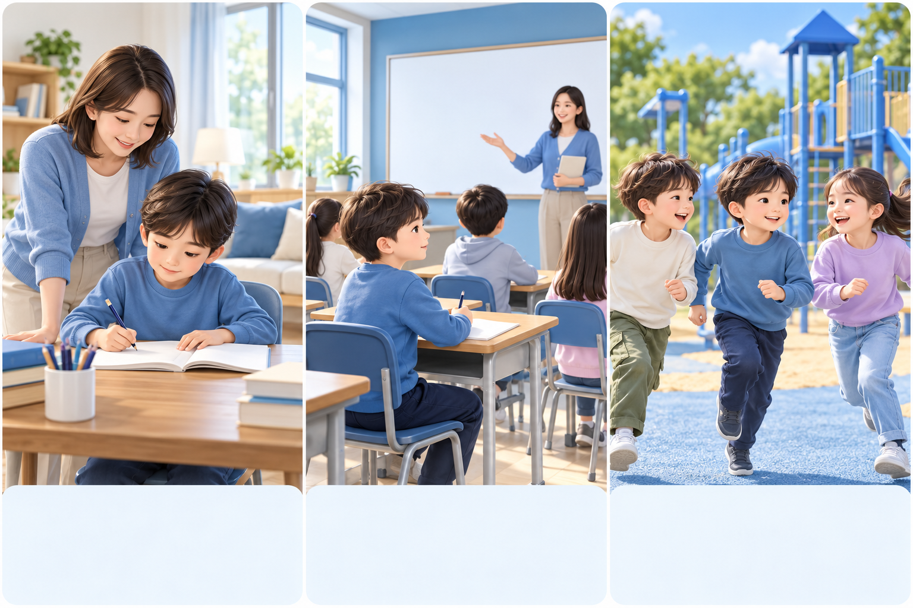
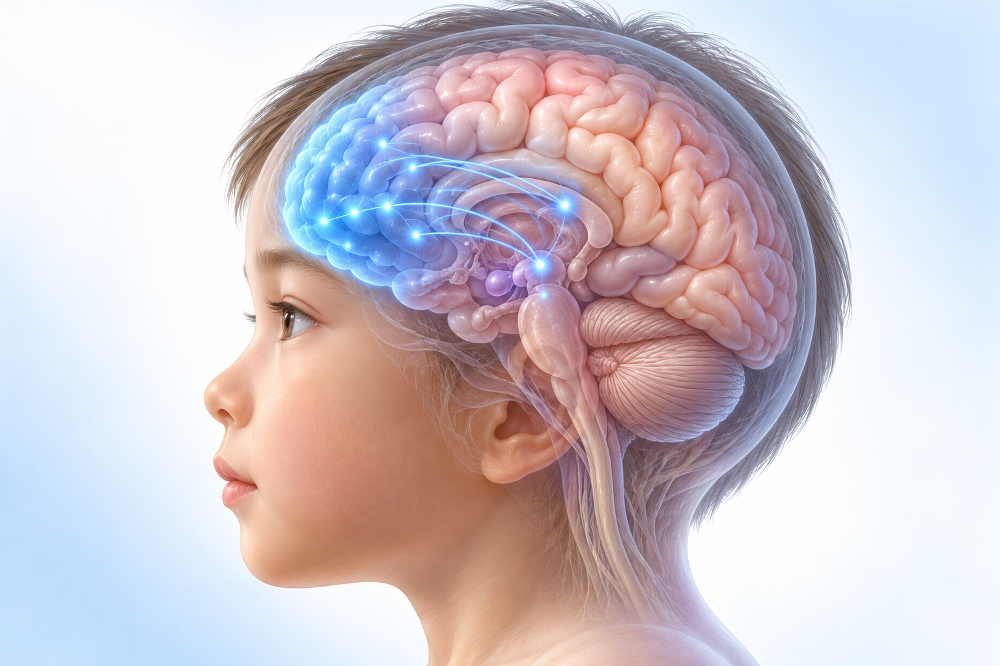
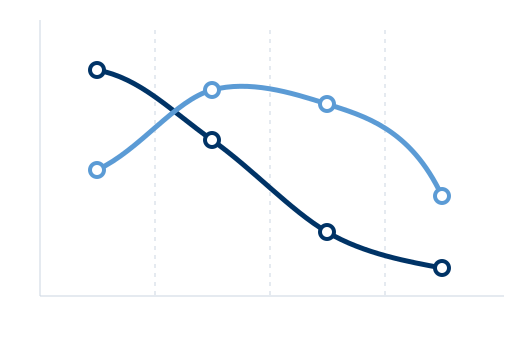
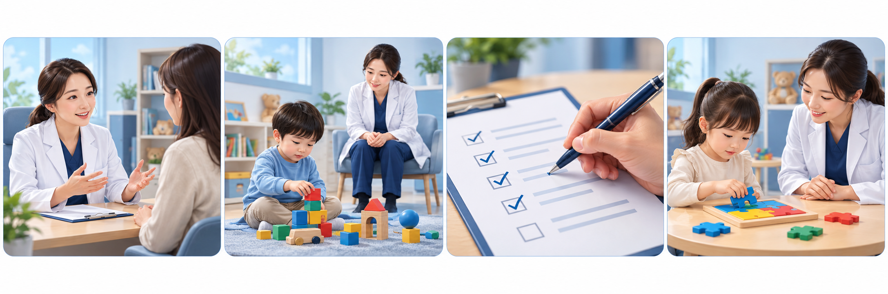

대부분의 아이는 6살 이전에 증상이 시작되어 이른 나이에도 관찰할 수 있습니다. 2013년 DSM-5부터 진단 기준에서 증상 시작 나이가 만 12세 이전으로 바뀌었습니다.
신경발달질환이라고 부릅니다
뇌가 발달하는 과정에서 생기는 문제로 봅니다. 성격이나 노력하지 않아서 생기는 것이 아닙니다.
생활에 지장이 있을 때 진단합니다
증상이 있다는 것만으로 진단하지 않습니다. 학업·대인관계·일상 기능에 실제 지장이 함께 있을 때 진단합니다.
ADHD는 ‘마음가짐’이 아니라 뇌 발달과 관련된 문제로 이해합니다
아산 28회 연수강좌 — 소아 ADHD 진단과 치료의 최신 지견(김효원)
02 / 20
02 · 산만하지 않아도 ADHD일 수 있나요
진단 기준은 두 가지 증상군으로 나뉩니다
각 증상군에 항목이 9개씩 있고, 진료에서 하나씩 살펴봅니다
부주의 · 9개 항목
· 실수를 자주 합니다 · 해야 할 일에 주의를 충분히 기울이지 못하고 멍하거나 딴생각을 합니다 · 다른 사람이 이야기할 때 딴생각을 하느라 기억하지 못합니다 · 숙제·시험공부를 계획해서 조직화하지 못하고 집중을 이어가지 못합니다 · 물건을 자주 잃어버립니다 · 택배 아저씨나 차 소리에도 쉽게 주의가 흐트러집니다
과잉행동 · 충동성 · 9개 항목
· 가만히 앉아 있지 못하고 꼼지락거립니다 · 초등학교 1학년인데 수업 시간에 돌아다닙니다 · 위험한 행동을 하거나 끊임없이 움직입니다 · 말을 쉬지 않고 합니다 · 질문이 끝나기 전에 불쑥 대답하고 순서를 기다리기 어렵습니다 · 줄 서서 기다리지 못하고 자주 끼어들거나 방해합니다
과잉행동·충동성은 초등학교 입학 전후에 가장 두드러지고, 나이가 들면서 점점 호전되는 경향이 있습니다
아산 28회 연수강좌 — 소아 ADHD 진단과 치료의 최신 지견(김효원)
03 / 20
03 · 산만하지 않아도 ADHD일 수 있나요
한 곳이 아니라 여러 환경에서 문제가 보여야 합니다
주의력이 조금 떨어져도 학교생활에 큰 문제가 없으면 ADHD로 진단하지 않습니다
여러 환경에서 분명한 문제
학업, 또래 관계, 학교 선생님과의 관계, 가정생활, 놀이터에서 아이들과 노는 모습처럼 여러 환경에서 분명한 문제가 보여야 진단하고 약물치료도 합니다.
생활에 실제 지장이 있는지
주의력이 떨어지지만 학교생활을 잘하고 큰 문제가 없으면 ADHD라고 진단하지 않습니다. 학업·대인관계·일상 기능에 실제 지장이 있는지를 봅니다.

가정학교놀이터
집·학교·놀이터처럼 여러 곳에서 어려움이 이어지는지 살핍니다 · 설명용 그림
집에서의 모습, 학교에서의 모습을 모두 이야기해 주시면 도움이 됩니다
아산 28회 연수강좌 — 소아 ADHD 진단과 치료의 최신 지견(김효원)
04 / 20
04 · 산만하지 않아도 ADHD일 수 있나요
ADHD의 본질은 ‘실행기능’의 발달이 늦은 것입니다
단순한 주의력 부족이 아니라 뇌의 관리 기능이 또래보다 늦게 자라는 상태입니다
행동을 스스로 조절하는 뇌의 관리 기능
실행기능은 행동을 스스로 조절·계획·실행하는 기능입니다. ADHD는 이 기능이 또래보다 늦게 발달하는 상태입니다.
뇌 전체를 이끄는 지휘자
실행기능은 뇌 전체의 기능을 지휘하는 지휘자와 같습니다. 아이의 뇌, 특히 전두엽이 자라면서 함께 자라는데 ADHD가 있는 아이는 이 발달이 느립니다.

전두엽(뇌의 앞쪽)
뇌의 앞쪽 전두엽이 실행기능을 맡아 지휘합니다 · 설명용 그림
ADHD는 ‘결함’이 아니라 뇌의 관리 기능이 늦게 자라는 것으로 설명합니다
아산 28회 연수강좌 — 소아 ADHD 진단과 치료의 최신 지견(김효원)
05 / 20
05 · 산만하지 않아도 ADHD일 수 있나요
실행기능은 여섯 가지 일을 맡습니다
아이가 힘들어하는 모습이 어디서 나오는지 살펴봅니다
반응 억제
말이나 행동 전에 잠깐 멈춰 생각하는 능력입니다. 약하면 말과 행동이 툭툭 튀어나오고 쉽게 화를 내 친구와 부딪힐 수 있습니다.
시간 관리
시험공부를 할 때 마감까지 시간을 계산하고 챙겨서 하는 일도 실행기능입니다.
계획·우선순위
순서를 정해 실행하고, 계획대로 안 되면 고쳐서 다시 하는 일입니다. 어려우면 잠자기 전에야 숙제를 시작하기도 합니다.
작업 기억
규칙이나 지시, 해야 할 일을 머릿속에 잡아 두고 해내는 힘입니다. 주의력의 핵심 기능입니다.
감정 조절
생각과 행동뿐 아니라 감정 조절도 어려워 사소한 일에 쉽게 화를 내고 감정 기복이 심할 수 있습니다.
정리·조직화
책가방, 책상, 해야 할 일, 수첩 같은 것이 정리되지 않고 엉망일 수 있습니다.
이 여섯 가지가 약하면 ‘게으르다’, ‘말을 안 듣는다’로 오해받기 쉽습니다
아산 28회 연수강좌 — 소아 ADHD 진단과 치료의 최신 지견(김효원)
06 / 20
06 · 산만하지 않아도 ADHD일 수 있나요
좋아하는 일에 오래 집중하는데도 ADHD일 수 있나요?
ADHD가 있는 아이는 보상에 대한 반응이 남다릅니다
보호자가 자주 하시는 질문
“컴퓨터 게임은 4시간씩 하는데 집중력이 좋은 것 아닌가요? 레고 블록은 2시간씩 만드는데요.”
연자의 설명
자기가 좋아하는 것에 지나치게 집중하고 몰두하는 것도, 집중을 조절하는 뇌가 어려운 것입니다.
보상이 한참 뒤에 오면 이어가기 어렵습니다
버튼을 누르면 바로 재미있는 게임이 나오는 것이 아니라, 기말고사를 꾸준히 준비해 성적이 오르면 자전거를 사 주는 것처럼 보상이 한참 뒤에 주어져도 그 보상을 생각하며 해야 할 일을 꾸준히 이어가는 능력도 ADHD가 있는 아이에게는 어렵습니다.
바로 오는 보상한참 뒤에 오는 보상
버튼을 누르면 바로 나오는 재미와, 오래 준비해야 받는 보상을 비교합니다 · 설명용 그림
게임이나 레고에 몰입하는 모습만으로 단정하지 않고, 진료에서 생활 전반을 함께 살펴봅니다
아산 28회 연수강좌 — 소아 ADHD 진단과 치료의 최신 지견(김효원)
07 / 20
07 · 산만하지 않아도 ADHD일 수 있나요
얌전해 보여서 놓치기 쉬운 ADHD가 있습니다
과잉행동이 두드러지지 않으면 진단이 늦어지기 쉽습니다
부주의 우세형
겉으로는 얌전해서 문제 행동이 없어 보이지만, 집중을 유지하고 과제를 끝내는 데 어려움이 계속됩니다.
지능이 좋은 아이
높은 지능으로 증상을 보완해 학령 초기에는 드러나지 않다가, 과제량이 늘면 뒤늦게 겉으로 드러날 수 있습니다.
여자 아이
과잉행동보다 부주의하고 속으로 힘들어하는 증상이 많아 ‘조용한 아이’로 여겨져 진단과 치료가 늦어지기 쉽습니다.
‘조용한 ADHD’는 이런 모습으로 나타납니다
과잉행동이나 충동성은 두드러지지 않지만 느리고 꿈뻑거리며 빨리 끝내지 못하고, 멍하게 있다가 할 일을 마치지 못하거나 위축되기도 합니다. 나이가 들수록 과잉행동·충동성이 줄어 부주의형이 되기 쉽습니다.
이런 아이들은 주의 깊게 관찰해야 하며, 걱정되면 진료에서 상의해 주세요
아산 28회 연수강좌 — 소아 ADHD 진단과 치료의 최신 지견(김효원)
08 / 20
08 · 산만하지 않아도 ADHD일 수 있나요
ADHD는 흔하고, 나이에 따라 모습이 달라집니다
과잉행동·충동성은 줄지만 부주의 증상은 오래 남을 수 있습니다
5–8%
학령기 소아. 초등학교 1학년 기준으로 한 반에 한두 명, 많으면 세 명 정도입니다
약 2.5%
성인. 뇌 발달이 또래를 따라잡는 경우가 많아 나이가 들수록 줄어듭니다
3–4 : 1
소아의 남자 : 여자 비. 여자아이는 부주의형이 많아 과소진단되는 경향이 있습니다
15–20%
성인기까지 뚜렷한 증상이 이어지는 비율. 부주의 증상이 오래 남습니다

학령전기학령기청소년기성인기과잉행동·충동성부주의
과잉행동·충동성은 점점 줄고 부주의 증상은 오래 이어집니다 · 설명용 도식
ADHD는 소아청소년에서 가장 흔한 신경발달질환의 하나입니다
아산 28회 연수강좌 — 소아 ADHD 진단과 치료의 최신 지견(김효원)
09 / 20
09 · 산만하지 않아도 ADHD일 수 있나요
유전의 영향이 크고, 뇌 발달이 ‘늦됨’입니다
전전두엽의 성숙이 늦어지는 것이 핵심 기전입니다
약 75%
유전의 비중
ADHD는 유전의 영향이 큽니다. 친형제는 25–30%로 일반 아동의 4–5배이고, 입양 형제는 5–7%로 일반 유병률과 비슷합니다. 키나 지능처럼 작은 힘을 가진 많은 유전자의 조합으로 설명하는 것으로 봅니다.
앞쪽뇌
전전두엽-선조체 회로
조절을 맡는 전전두엽과 연결된 회로의 기능이 낮고, 신경전달물질인 도파민·노르에피네프린의 불균형과도 연관됩니다. 도파민은 판단·반응 조절에, 노르에피네프린은 자극의 선별과 집중 유지에 주로 관여합니다.
2–3년
결함이 아니라 늦됨
ADHD 아동은 대뇌피질이 성숙하는 정점이 약 2–3년 늦게 도달합니다. 이상한 것이 아니라 발달이 늦은 것이며, 전두엽 발달은 20대 초반까지 이어지면서 또래와 비슷해집니다.
치료하지 않으면 20대 초반까지 전전두엽 발달의 지연과 그로 인한 어려움이 남을 수 있다고 설명합니다
아산 28회 연수강좌 — 소아 ADHD 진단과 치료의 최신 지견(김효원)
10 / 20
10 · 산만하지 않아도 ADHD일 수 있나요
부모가 잘못 키워서 생기는 병이 아닙니다
ADHD는 유전·신경생물학적 질환이며, 양육 방식은 원인이 아닙니다
흔한 오해
“부모가 잘못 키워서 ADHD가 됐겠죠.”
바로잡기
양육 방식은 원인이 아닙니다. 일관되지 않은 훈육 등은 증상에 대응하는 과정에서 생긴 2차적인 모습입니다. 다만 치료 과정에서 양육 환경을 함께 조정하는 것은 중요합니다.
위험을 높일 수 있는 요인
임신 중 음주, 저체중·미숙아, 출산 전후 뇌 손상 등이 뇌 발달에 큰 영향을 주어 ADHD가 생길 수도 있습니다.
환경 요인은 대부분 원인이 아닙니다
대부분 환경 때문에 생기지는 않지만, 심한 학대나 방임을 겪으면 주의력이 떨어지는 모습이 나타날 수 있습니다.
자책하기보다 아이의 어려움을 이해하고 함께 도울 방법을 찾는 것이 중요합니다
아산 28회 연수강좌 — 소아 ADHD 진단과 치료의 최신 지견(김효원)
11 / 20
11 · 산만하지 않아도 ADHD일 수 있나요
ADHD는 검사 하나로 진단하지 않습니다
피 검사로 진단하는 병이 아니어서 여러 방법으로 정보를 모읍니다

면담
아이와 부모님, 담임 선생님 등 여러 정보원에서 이야기를 듣습니다.
행동 관찰
충분한 시간을 두고 아이의 행동을 직접 관찰합니다.
평가 척도·설문지
ADHD 증상을 살펴보는 평가 척도와 설문지를 활용합니다.
심리·신경인지 검사
지능검사, 종합주의력검사 등을 보조적으로 활용합니다.
MRI·뇌파 등 뇌영상만으로는 진단할 수 없고, 전문의가 종합해서 판단합니다
아산 28회 연수강좌 — 소아 ADHD 진단과 치료의 최신 지견(김효원)
12 / 20
12 · 산만하지 않아도 ADHD일 수 있나요
진료에서는 여러 사람의 정보를 함께 모읍니다
한 번 보고 판단하지 않고 충분한 기간 관찰합니다
진료실에서 보이는 모습
아이를 직접 보고 부모님과 담임 선생님에게서 정보를 많이 얻습니다. 진료실에서 엄마와 잠깐 이야기하는 동안에도 가만히 못 있고 들락날락하는 아이도 있습니다.
학교·어린이집 정보
학교에서의 어려움을 선생님이 써 주시는 경우가 많습니다. 예전에는 어린이집에서 다른 아이를 때리거나 함께 먹는 밥을 엎는 영상을 보내 주신 경우도 있었습니다.
충분한 기간, 여러 상황
한 번 보고 판단하지 않고 충분한 기간 관찰하며 여러 검사를 하고, 가정과 학교 등 여러 상황에서 얻은 정보를 통합합니다.
지능검사는 왜 할까요
지능이 좋은데도 주의력이 떨어지는 것인지, 지능이 낮은 것을 감안해도 주의력이 더 떨어지는 것인지를 함께 보기 위해서입니다.
ADHD가 의심되면 소아청소년정신건강의학과 전문의에게 의뢰해 평가합니다
아산 28회 연수강좌 — 소아 ADHD 진단과 치료의 최신 지견(김효원)
13 / 20
13 · 산만하지 않아도 ADHD일 수 있나요
ADHD는 다른 어려움과 함께 오는 경우가 많습니다
ADHD 자체뿐 아니라 함께 있는 문제도 같이 돕습니다
함께 나타나는 주요 동반질환 (강의 자료의 개념도 비율)
적대적 반항장애40%
불안장애34%
학습장애25%
기분장애18%
품행장애14%
함께 생길 수 있는 문제
공격적인 행동, 말을 안 듣고 반항하는 것, 자신감 저하, 우울, 또래 관계의 문제, 학업의 문제가 같이 올 수 있습니다.
연자 Q&A
치료해도 과잉행동과 학교 문제 행동이 교정되지 않는다면 동반된 다른 문제가 같이 있을 수 있습니다. 다시 평가하고 부모교육, 사회성치료, 놀이치료가 필요한지 상의합니다.
동반 문제가 있으면 경과와 치료 반응에 큰 영향을 주므로 함께 살펴봅니다
아산 28회 연수강좌 — 소아 ADHD 진단과 치료의 최신 지견(김효원)
14 / 20
14 · 산만하지 않아도 ADHD일 수 있나요
일찍 발견해 도우면 아이의 어려움을 줄일 수 있습니다
강의에서는 조기 발견과 개입이 예후를 좌우한다고 설명했습니다
치료하지 않고 두면
· 학교와 집에서 부정적인 피드백을 받아 자존감이 떨어지고 ‘나는 부족한 사람’이라고 생각하게 될 수 있습니다 · 전두엽 기능이 성숙을 따라잡을 때까지 학습 부진, 또래 관계 문제, 정서 불안정이 있을 수 있습니다 · 적절한 훈육이나 돌봄을 받지 못하면 품행장애(반복되는 문제 행동)로 이어질 수도 있습니다 · 치료하지 않으면 15–20% 정도가 성인기까지 ADHD가 이어집니다
치료를 잘하면
· 과잉행동이 가장 먼저 좋아지고, 주의력 결핍도 좋아집니다 · 학업, 또래 관계, 자존감 등 여러 영역에서 좋아집니다 · 교재 정리: 치료군이 치료하지 않은 군보다 더 나은 결과를 보였습니다 · 빨리 발견해서 개입하는 것이 중요합니다
개인마다 경과가 다르므로, 우리 아이의 상황은 진료에서 함께 정합니다
아산 28회 연수강좌 — 소아 ADHD 진단과 치료의 최신 지견(김효원)
15 / 20
15 · 산만하지 않아도 ADHD일 수 있나요
치료는 약만이 아니라 여러 방법을 함께 합니다
약물치료가 일차치료이고, 부모교육과 정신사회적 치료를 함께 합니다
약물치료
효과가 입증된 일차치료입니다. 핵심 증상(주의력 결핍·과잉행동·충동성)과 실행기능을 좋아지게 하는 것으로 알려져 있습니다.
부모교육
약에 대한 교육과 함께 아이를 훈육하고 돌보며 사회성과 공부를 가르치는 방법을 배웁니다. 긍정적 관심, 일관된 지침, 칭찬이 포함됩니다.
정신사회적 치료
우울·사회성 문제·충동성이 있으면 인지행동치료(행동 전 ‘생각-스톱’), 사회기술훈련(대개 그룹), 가족치료를 함께 합니다.
학습·교육적 지원
학업에 어려움이 있거나 난독증이 함께 있으면 학교 환경 조정과 학습 전략을 함께 마련합니다.
어떤 방법을 어떻게 조합할지는 아이의 증상과 동반 문제에 맞춰 진료에서 정합니다
아산 28회 연수강좌 — 소아 ADHD 진단과 치료의 최신 지견(김효원)
16 / 20
16 · 산만하지 않아도 ADHD일 수 있나요
ADHD 약은 크게 두 갈래입니다
아이의 부작용과 동반 증상에 맞춰 고릅니다
중추신경자극제 · 메틸페니데이트
· 콘서타·메디키넷·페니드. 약 70–85%에서 효과가 있고 빠르고 강해 일차로 고릅니다 · 복용 당일부터 작용하며 약마다 작용 시간이 다릅니다(페니드 4시간, 메디키넷 6시간, 콘서타 12시간) · 주요 부작용: 식욕저하·불면·두통·복통
비중추신경자극제
· 아토목세틴(스트라테라), 클로니딘(켑베이). 자극제보다 효과는 덜하지만 부작용도 덜합니다 · 틱이나 불안이 있어 부작용이 예상될 때 쓸 수 있고, 남용 위험이 낮습니다 · 효과가 나타나기까지 최소 2주 이상 걸리고, 한번 작용하면 24시간 효과가 이어집니다
내과의가 알아야 할 점
혈압·맥박을 조금 올릴 수 있어 심질환·구조적 심기형·돌연사 가족력을 확인하고, 틱이나 경련이 있으면 신중히 씁니다. 초기 식욕저하로 일시적 성장지연이 가능해 키·체중을 정기적으로 기록합니다.
약의 종류와 용량은 증상, 부작용, 동반 증상을 보고 의사가 정합니다
아산 28회 연수강좌 — 소아 ADHD 진단과 치료의 최신 지견(김효원)
17 / 20
17 · 산만하지 않아도 ADHD일 수 있나요
보호자가 가장 궁금해하시는 두 가지
연자의 설명과 Q&A 답변을 정리했습니다
Q. 한번 시작하면 평생 먹나요?
아니요. 정기적으로 재평가합니다. 보통 1년마다 효과와 필요성을 종합해서 다시 평가하고, 호전·안정되면 감량이나 중단을 시도합니다. 연자는 전두엽 발달이 또래와 비슷해질 때까지는 먹어야 하지만 일찍 시작해 빨리 끊자고 설명합니다.
Q. 성장에 방해되지 않나요?
대부분 큰 문제 없습니다. 초기 식욕저하로 일시적 성장지연이 있을 수 있지만 연자 병원 자료에서는 결국 원래 퍼센타일을 따라잡았습니다. 식욕저하가 너무 두드러지면 다른 약으로 바꾸고, 키·체중 퍼센타일을 계속 기록합니다.
초반에 아이에게 맞는 약을 찾는 과정이 중요합니다
연자는 부작용이 요란할 수 있지만 보호자 눈에 보이지 않는 부작용은 없고 끊으면 다음 날 바로 없어진다고 설명합니다. 식욕저하가 심할 때는 연자 Q&A에서 식욕을 돕는 약을 함께 쓰거나 약물 휴일을 두는 방법도 소개했습니다.
연자의 병원 경험과 설명이며, 아이마다 반응이 달라 진료에서 함께 조정합니다
아산 28회 연수강좌 — 소아 ADHD 진단과 치료의 최신 지견(김효원)
18 / 20
핵심 정리와 질문
기억할 5가지와 진료 때 물어볼 것
아이의 모습을 이야기하면서 함께 확인해 보세요
핵심 정리
1
의지가 아니라 발달 실행기능의 발달이 늦은 신경발달질환입니다. 성격이나 노력 탓이 아닙니다.
2
놓치기 쉬운 아이 조용한 부주의형, 여자아이, 지능 좋은 아이는 늦게 드러납니다.
3
진단은 종합 판단 단일 검사·뇌영상으로 진단할 수 없고, 의심되면 소아청소년정신과로 의뢰합니다.
4
약물은 효과적 자극제 70–85% 반응. 시작 전 심질환 병력·가족력을 확인하고 키·체중을 살핍니다.
 대부분 6살 이전에 시작합니다
대부분 6살 이전에 시작합니다